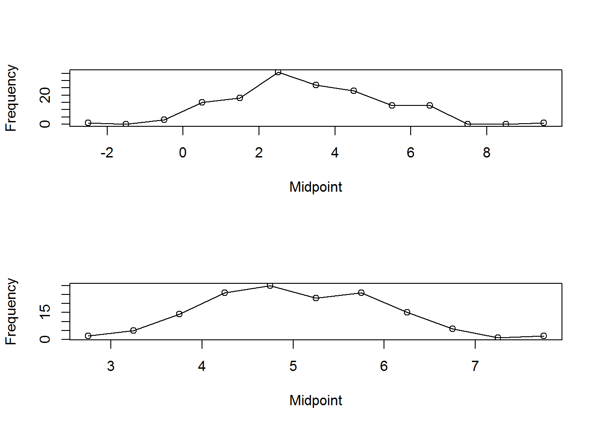

1 Introduction to statistical analysis
Kachigan (1986) defines statistical analysis as the:
Data Collection,
Organization (including project and data management), and
Interpretation of data according to well-defined procedures
In this course we will use Kachigan’s definition as a framework and focus on aspects of collection (experimental design), organization (using descriptive and inferential approaches), and interpretation.
One of the primary facets of quantitative analysis is the need to be creative in your approaches - the methods outlined in this class provide the foundation for analysis but the practitioner is encouraged to explore the methods and practices in their discipline to best address the needs for interpretation.
Indeed, this is one of the features of statistical analysis that I would like to highlight: We cannot be constrained to cookbook approaches to analysis. Every problem, every research approach, will require consideration of the means of collection, processing of data, and statistical analysis.
Prior to study we need to understand clearly and succinctly what the specific research focus is. Once this is unambiguous to the scientist, then the process of data collection can begin. At this stage, it is necessary to define the variables (observations) that will be collected.
2 Practical aspects of Statistical Analysis
2.1 Data Organization (Broman and Woo, 2018)
Spreadsheets continue to to be a primary way for data storage, analysis, and visualization
Multipurpose (positive and negative)
Can be error prone to make large sweeping changes - hard to retrace your steps. Though stand by for some guidance on this.
Organization is critical for reproducible research and archiving
2.2 Consistency and conventions
Use consistent codes for categorical variables
Use a consistent fixed code for any missing values (e.g. ‘NA’, ‘NaN’, or an unfilled cell)
Use consistent variable names (generally these are column names)
Use a consistent data layout in multiple files (same column names). This allows data to be merged in a seamless way.
Use a consistent format for all dates (YMD, DMY, MS Excel will often read non-traditional date values as a character code that must be post-processed for analysis.)
Use consistent phrases in your notes. Notes are data. So, treating these as variables that have a binary, nominal, or ordinal value will allow you to treat these them quantitatively.
Be careful about extra spaces within cells. Again, MS Excel will read these as character codes that must be post-processed for analysis.
One variable is recorded in each cell (remember, in our scheme, a comment is a variables)
Strive for a rectangular data layout
Avoid font and cell colors as annotation
Use .csv or some other file back up. ASCII files, like .csv promote distribution to non-MS Excel users (yes, they do exist)
2.3 Data Managment (Adapted from Malin Pinsky at Rutgers University)
Keep lab notebooks to record what you did, learned, or produced each day. Can be physical notebooks, text files, Evernote, Jupyter notebooks, etc.
Establish a mechanism to facilitate collaboration and sharing within the lab.
This could be a shared directory or project
Given the resources available here it is often most useful to work directly in the cloud (Dropbox, OneDrive)
Use descriptive (non-ambiguous) file names
Keep raw (unprocessed, un-formatted) data in a file and associated directory that is not overwritten. Instead, processing should be performed on this data and saved in an appropriately named file.
- If we ‘clean’ the data, we often use a folder called something like “data-raw” and a folder called “data-clean” to differentiate data in its original form from data that has been manipulated. Have “master” or “original” and “tidy” versions of files and name them appropriately.
Store raw data with metadata describing the contents of the file (i.e. what do the columns mean, how was the data collected, etc.)
If using data downloaded from another data source, we often have a folder called “data_dl” for downloaded data. Include the data source in a README file for reproducibility (this is like meta data and provides useful description).
3 Types of Variables
Properties and characteristics of an object that can assume two or more different values are called variables.
We need to understand the structure of variables - different types of measurements will necessitate the appropriate methods of analysis.
The next step after the completion of data collection is to organize the data into a meaningful form so that patterns, if any, emerging out of the data can be seen easily.
One of the common methods for organizing data is to construct frequency distributions either in a table or as a figure.
Frequency distribution is an organized representation of the number of observations in each category on the scale of measurement.
These allow researchers to have a glance at the entire data conveniently.
It shows whether the observations are high or low and also whether they are concentrated in one area or spread out across the entire scale.
Thus, frequency distribution presents a picture of how the individual observations are distributed in the measurement scale.
3.1 Categorical Variables (entities are divided into distinct categories):
Binary variable: There are only two categories.
Dead or alive,
Present or absent,
positive or negative (e.g. for a disease),
the value of some quantity of interest is zero or positive,
or the value of some quantity of interest exceeds some threshold value.
Nominal variable: There are more than two categories.
Whether the subject is an omnivore, vegetarian, vegan, or carnivore.
The subject’s taxonomic group,
Ordinal variable: Similar to a nominal variable but the categories are ordered.
Whether people got a fail, a pass, a merit or a distinction in their exam.
Intensity of infection (e.g. none, mild, moderate, severe)
3.2 Frequency Distribution of a Categorical Variable
- A tally of how frequently occurring a value is among categories.
3.3 Continuous Variables (entities or objects get a score on the ratio scale):
Interval variable: Equal intervals on the variable represent equal differences in the property being measured.
- e.g. the difference between 6 and 8 is equivalent to the difference between 13 and 15.
Some examples of measurements that are continuous are:
Density or frequency of organisms in a transect or at a sampling station,
Body Mass Index or some measure of condition of an organism.
3.4 Frequency Distribution of a Continuous Variable
- A question often asked: What interval to choose? Your knowledge of the domain will guide this.
The width of the class can be determined by dividing the range of observations by the number of classes.
The following are some guidelines regarding class widths:
1.) It is advisable to have equal class widths. Unequal class widths should be used only when large gaps exist in data.
2.) The class intervals should be mutually exclusive and nonoverlapping.
3.) Open-ended classes at the lower and upper side (e.g., <10, >100) should be avoided.
Determination of the Amount of Phosphorous in Leaves: A Frequency Table of Continuous Data
| Phosphorous concentration | Frequency |
|---|---|
| 8.1 to 8.2 | 2 |
| 8.2 to 8.3 | 6 |
| 8.3 to 8.4 | 8 |
| 8.4 to 8.5 | 11 |
| 8.5 to 8.6 | 17 |
| 8.6 to 8.7 | 17 |
| 8.7 to 8.8 | 24 |
| 8.8 to 8.9 | 18 |
| 8.9 to 9.0 | 13 |
| 9.0 to 9.1 | 10 |
| 9.1 to 9.2 | 4 |
3.5 Other Descriptions of Continuous Frequency Distributions
3.5.1 Range
- The smallest score subtracted from the largest
Example:
- Number of friends of 11 Facebook users.
- 22, 40, 53, 57, 93, 98, 103, 108, 116, 121, 252
- Range = 252 - 22 = 230
- Very biased by outliers, why?
3.5.2 The Interquartile Range
- The values that split the sorted data into four equal parts.
- First or lower quartile (the range values of the first 25% of values in ordered sequence)
- Second quartile (the range values of the first 25 to 50% of values in ordered sequence)
- Third quartile (the range values of the first 50 to 75% of values in ordered sequence)
- Fourth quartile (the range values of the first 75 to 100% of values in ordered sequence)

3.6 Cumulative Distribution of a Continuous Variable
Determination of the Amount of Phosphorous in Leaves: A Frequency Table of Continuous Data
| Cummulative Frequency | |||
|---|---|---|---|
| Phosphorous concentration | Frequency | Starting with Low Values | Starting with High Values |
| 8.15 to 8.25 | 2 | 2 | 130 |
| 8.25 to 8.35 | 6 | 8 | 128 |
| 8.35 to 8.45 | 8 | 16 | 122 |
| 8.45 to 8.55 | 11 | 27 | 114 |
| 8.55 to 8.65 | 17 | 44 | 130 |
| 8.65 to 8.75 | 17 | 61 | 86 |
| 8.75 to 8.85 | 24 | 85 | 69 |
| 8.85 to 8.95 | 18 | 103 | 45 |
| 8.95 to 9.05 | 13 | 116 | 27 |
| 9.05 to 9.15 | 10 | 126 | 14 |
| 9.15 to 9.25 | 4 | 130 | 4 |
Total frequency = 130 = n
3.7 Measures of central tendency
3.7.1 The Mode
- The most frequently occurring value in the population or sample.
3.7.2 The Median
- The 50th percentile in the ordered data.
3.7.3 The Mean
- We will spend a lot of time on this.
3.8 Skew and Kurtosis
- A left-skewed distribution has a long left tail.

- A right-skewed distribution has a long right tail.

3.9 Some additional visual representations of frequency
3.9.1 Frequency polygon
A frequency polygon is constructed by connecting all midpoints of the top of the bars in a histogram by a straight line without displaying the bars.
A frequency polygon aids in the easy comparison of two frequency distributions.
When the total frequency is large and the class intervals are narrow, the frequency polygon becomes a smooth curve known as the frequency curve.

3.9.2 Box and whisker plot
This graph, first described by Tukey in 1977, can also be used to illustrate the distribution of data.
There is a vertical or horizontal rectangle (box), the ends of which correspond to the upper and lower quartiles (75th and 25th percentile, respectively).
Hence the middle 50% of observations are represented by the box.
The length of the box indicates the variability of the data. The line inside the box denotes the median (sometimes marked as a plus sign).
The position of the median indicates whether the data are skewed or not. If the median is closer to the upper quartile, then they are negatively skewed and if it is near the lower quartile, then positively skewed.
4 The Normal Distribution
- The normal distribution is probably the most common distribution in all of probability and statistics.
- One of the main reasons it crops up so much is due to the Central Limit Theorem (we will explore this).
4.1 The Normal Probability Density Function
The probability density function for the normal distribution is defined as:
We can think of the model in this way (mathematical approach):
Where the parameters (the symbols ) represent the mean, \(\mu\) (the point on the x-axis where the center of the distribution is) and the standard deviation, \(\sigma\) (how spread out the distribution is) of the population.
- What are some of the general characteristics of this model? Can you describe its shape?
- What are the parameters of the model? These are the quantities we will estimate in the fitting process.
- What are the variables used in the model? These are the observations.
Below, two distributions are plotted from the ‘Standard Normal Distribution’, in this formulation:
\({\sigma=1}\) and \({\mu=0}\).

The normal distribution is an example of a continuous univariate probability distribution with infinite support. By infinite support, we mean that we can calculate values of the probability density function for all outcomes between \(-\infty\) and \(+\infty\).
The output of a probability density function is not a probability value.
To get the probability from a probability density function we need to find the area under the curve. So from our example distribution with mean = 0 and standard deviation = 1, we can find the probability that the outcome is between 0 and 1 by finding the area shown in the image below.

We can read this as “the integral of the probability density function between 0 and 1 (on the left-hand side) is equal to the probability that the outcome of the random variable is between zero and 1 (on the right-hand side)”.
We can cover all possible values if we set our range from ‘minus infinity’ all the way to ‘positive infinity’. Therefore the following has to be true for the function to be a probability density function:
One last thing here: The probability of the random variable being equal to a specific outcome is 0, because the integral over x values of x to x is equal to zero.
4.2 Different Means, Identical Standard Deviation
4.3 Same Mean, Different Standard Deviation
4.4 Z-scores
4.4.1 Properties of Z-scores - Centering and Scaling
- Standardizing a score with respect to the other scores in the group.
- Expresses a score in terms of how many standard deviations it is away from the mean.
- Converts a distribution to a z-score distribution.
- Z-scores have mean = 0 and standard deviation = 1.
| Obs | Centered Obs (difference between the value and the mean) | Scaled Centered Obs (Centered value divided by standard deviation, Z-score) | Prob (obs < Z) | Prob (Obs > Z) |
|---|---|---|---|---|
| 0.599 | 0.816 | 0.813 | 0.792 | 0.208 |
| -0.926 | -0.709 | -0.706 | 0.240 | 0.760 |
| -2.051 | -1.834 | -1.827 | 0.034 | 0.966 |
| 0.261 | 0.478 | 0.476 | 0.683 | 0.317 |
| -0.715 | -0.498 | -0.496 | 0.310 | 0.690 |
| 0.484 | 0.700 | 0.698 | 0.757 | 0.243 |
| 0.425 | 0.642 | 0.640 | 0.739 | 0.261 |
| 1.352 | 1.569 | 1.563 | 0.941 | 0.059 |
| -0.896 | -0.679 | -0.676 | 0.249 | 0.751 |
| -0.702 | -0.485 | -0.483 | 0.314 | 0.686 |
| mean | sd |
|---|---|
| -0.217 | 1.004 |
4.4.2 Properties of Z-scores - Quantiles
1.96 definesthe top 2.5% of the distribution.
-1.96 defines the bottom 2.5% of the distribution.
As such, 95% of z-scores lie between -1.96 and 1.96.
99% of z-scores lie between -2.58 and 2.58.
99.9% of them lie between -3.29 and 3.29.
Let’s look at a Z Table
4.4.3 Areas under the Normal Curve for different quantile values

5 Model Fitting
5.1 Quantifying Error
A deviation is the difference between the mean (expected) and the observed data (the outcome of the sample).
The deviation of observed and expected value is also called: the residual, error, or residual error
Deviations can be calculated by taking each score and subtracting the mean from it:
When the normal fitting models:
- In the figure below the expected value is zero, and the residual error for each of the five samples is plotted.

Should we use the Total Error as an estimate of uncertainty?
- We could sum \(i^{th}\) error terms from 1 to n.
| Score | Mean | Deviation |
|---|---|---|
| 1 | 2.6 | -1.6 |
| 2 | -0.6 | |
| 3 | 0.4 | |
| 3 | 0.4 | |
| 4 | 1.4 | |
| Sum = | 0 |
5.2 Sum of Squared Errors
We could add the deviations to find out the total error, but the deviations ‘cancel out’ (some are positive and others negative)
Therefore, we square each deviation.
If we add these squared deviations we get the sum of squared errors (SS).
| Score | Mean | Deviation | Sqaured Deviation |
|---|---|---|---|
| 1 | 2.6 | -1.6 | 2.56 |
| 2 | -0.6 | 0.36 | |
| 3 | 0.4 | 0.16 | |
| 3 | 0.4 | 0.16 | |
| 4 | 1.4 | 1.96 | |
| Total | 5.20 |
- The sum of squares is a good measure of overall variability, but is dependent on the number of scores.
5.3 Variance
We calculate the average variability (average variability of each sample) by dividing by the number of scores minus one (n-1).
The quantity n - 1 is termed degrees of freedom. It is the maximum number of logically independent values, those with the freedom to vary in the sample
The sum of squares divided by the degrees of freedom is called the variance (s2).
Contrast this with the population variance:
5.4 Standard Deviation
The variance has one problem: it is measured in units2 (The original units, like the numbers are squared.).
This isn’t a very meaningful metric so we take the square root value.
This is the sample standard deviation:
\(s = \sqrt\frac{\Sigma^n_{i=1}(x_i-\bar{x})^2}{n-1}\)
5.5 Summary of Variance Estimates
The sum of squares, variance, and standard deviation represent the same thing:
- The fit of the mean to the data, how well the mean represents the observed data
- The variability in the data when modeled using the mean
6 Sampling and Parameter Estimation
6.1 Random samples
Every possible member of the population has an equal probability of being included in the sample.
Ex: scientific exit polling vs. twitter polls to estimate proportion voting for a candidate.
Think of a normally distributed frequency distribution as the population distribution:
How would the sampling distribution vary if samples were non-random?
Only statistically valid data that can be used for analysis - the first assumption of parametric statistics.
We will generally make an inspection of the data and/or the residuals to ensure that they are normally distributed.
Ensuring that data are collected in a random fashion allows statistics to be calculated. Non-random data collection disallows this.
Independence is also a critical aspect of sampling - the sampling of one element will not impact or predict the value of another element.
6.2 Parameter Estimates - Unbiased
Parameters are estimated quantities that could describe any number of population characteristics (the characteristics of variables).
We are generally focused on the mean and variance, estimated parameters could be the mean, median, mode.
One aspect of parameter estimation is to get a point estimate - approximation of the true value of the population, but does not provide information about the precision of the estimate.
The best estimate of \(\mu\) is \(\bar{x}\).
The best estimate of \(\sigma\) is \(s\).
We strive for an unbiased estimate of population paramters: Unbiased means that the expected value is equal to the true value (accuracy)
6.3 Parameter Estimates - Efficient
The second property we want is to have parameters be efficient
This has to do with the relationship of variance to sample size and is concerned with understanding how does sampling impact the estimate - variance should be reduced when sampling is increased.
6.4 Interval Estimation
Reporting point estimates alone is unsatisfactory - we need an estimate of the variation.
We want to know how close the sample statistic is to the population parameter.
Interval estimation is concerned making statements saying how confident or certain we are that the populaiton parameter resides in an interval of values.
e.g. There is a 0.95 probability that the value of \(\mu\) resides between 6.2 and 9.7.
6.5 Confidence Interval
- Confidence intervals involve:
Identification of associated probability
Specification of the interval
So how do we determine confidence intervals in practice:
In the first case, let’s use or general equation for a statistical model:
\(Statistic = Parameter \pm Error\) (From Kachigan, p. 138)
\(Paramter = Statistic \pm Error\)
\(\mu = \bar{x} \pm Error\)
- We will never know the magnitude of the true error? How large is the combined effect of sampling and process error. However, we can attach a probability that the error is a certain size. Now, we want to solve for the Statistic.
\(\bar{x} = \mu \pm Error\)
If we take an infinite number of samples from the population, we will get an estimate of the error term, \(\sigma\).
The error in sampling, from an infinite number of samples, is equal to the variation in the sample means, the standard distribution (sd) equals the standard error of the mean.
So this takes us back to our Z-score:
What is the z value in which 95% of the values are under the curve?
Let’s look at a Z Table

\(\mu = \bar{x} \pm 1.96\sigma\) (95% Certainty)
\(\mu = \bar{x} \pm ? \sigma\) (99% Certainty)
- The above presumes that we have a very good knowledge of the population parameter \(\sigma\), which is generally not the case. We do not sample populations and infinite number of times.
6.6 Confidence Intervals of the Mean from samples - using the t-distribution
The determination of the sampling interval from populations with unknown \(\sigma\) we will use our best estimate of \(\sigma\), which is s.
Similarly, we will use the t distribution to model the variability, you will see that it is flatter and has larger tails - what does this mean to our estimate of the confidence interval?
The t distribution is a one parameter distribution, df is the parameter and it controls the shape of the distribution. The model is platykurtic at small sample sizes.
df is n - 1.
To model the confidence interval we assume that the distribution of the variables are normally distributed.
Allow us to determine the interval estimates of an estimated parameter, contingent on the values of estimates of parameters derived from sampling, in a probabilistic way.
Let’s look at a t Table
\(\mu = \bar{x} \pm t_{df}{s_{\bar{x}}}\) (95% Certainty, with n = 10?)
\(\mu = \bar{x} \pm t_{df}{s_{\bar{x}}}\) (99% Certainty, with n = 10?)
\(\mu = \bar{x} \pm t_{df}{s_{\bar{x}}}\) (99% Certainty, with n = 50?)
7 Hypothesis Testing and Power
7.1 Statistical Hypothesis Testing
State a testable hypothesis
\(H_0\) Null hypothesis
\(H_A\) Alternative hypothesis
Declare \(\alpha\) level
Collect Data
Compare the test statistic to the critical value (determined by alpha)
State the resulting probability
State testable hypothesis
These are a set of mutually exclusive and exhaustive outcomes
The test statistic will support one or the other outcomes
\(H_0: \mu = 0\), \(H_A:\mu \ne 0\)
\(H_0: \mu = 3.5 cm\), \(H_A:\mu \ne 3.5 cm\)
\(H_0: \mu = 10.5 kg\), \(H_A:\mu \ne 10.5 kg\)
7.2 Example: Use Z-score to evaluate if it is likely that a given value of the distribution is the mean value
Is the mean fuel consumption of a population of buses equal to 20 mpg?
What is the null hypothesis?
We need information about the population (remember we are using Z-score so we know the population-level parameters \(\mu\) and \(\sigma\)).
Mean
Population standard deviation
Calculate Z-score for mean = 20 mpg
Determine the associated probability that the mean is 20 mpg given:
\(\sigma\) = 0.3, \(\mu\) = 19.1
7.3 Evaluate Z-score
What is the probability that we would get this Z-score?
Hypothetical Z-scores

| z | .00 | .01 | .02 | .03 | .04 | .05 | .06 | .07 | .08 | .09 |
|---|---|---|---|---|---|---|---|---|---|---|
| 0.0 | .5000 | .5040 | .5080 | .5120 | .5160 | .5199 | .5239 | .5279 | .5319 | .5359 |
| 0.1 | .5398 | .5438 | .5478 | .5517 | .5557 | .5596 | .5636 | .5675 | .5714 | .5753 |
| 0.2 | .5793 | .5832 | .5871 | .5910 | .5948 | .5987 | .6026 | .6064 | .6103 | .6141 |
| 0.3 | .6179 | .6217 | .6255 | .6293 | .6331 | .6368 | .6406 | .6443 | .6480 | .6517 |
| 0.4 | .6554 | .6591 | .6628 | .6664 | .6700 | .6736 | .6772 | .6808 | .6844 | .6879 |
| 0.5 | .6915 | .6950 | .6985 | .7019 | .7054 | .7088 | .7123 | .7157 | .7190 | .7224 |
| 0.6 | .7257 | .7291 | .7324 | .7357 | .7389 | .7422 | .7454 | .7486 | .7517 | .7549 |
| 0.7 | .7580 | .7611 | .7642 | .7673 | .7704 | .7734 | .7764 | .7794 | .7823 | .7852 |
| 0.8 | .7881 | .7910 | .7939 | .7967 | .7995 | .8023 | .8051 | .8078 | .8106 | .8133 |
7.4 Is it meaningful?
Declare \(\alpha\)
- Given our \(\alpha\) level, how does the resulting probability compare?
- Remember, \(\alpha\) is defined prior to statistical testing
- Two tail and one tail test

7.5 Statistical Hypothesis Testing
Evaluate if the population mean is not significantly different from some specified value.
\(H_0\): \(\mu\) = 0
\(H_A: \mu \ne 0\)
Introduce the idea of a critical value (critical quantile)
- \(\alpha\) of 0.05
We have data taken from the weight change in horses given some medical treatment.
We are interested to know if the mean change in weight that we found +1.29 kg is significantly different from 0 kg.
- We calculate the Z-score and find that Z = 1.45
\(P(mean \ge 1.29) = P(Z \ge 1.45) = ?\)
\(P(mean \le 1.29) = P(Z \le 1.45) = ?\)
Z = 1.96 is the rejection region at 2.5%
- This is the ‘region of rejection’
Now we have a way to objectively reject or accept the null hypothesis.
7.5.1 One- and Two-Tailed Tests
Alternative to testing ‘is the value different.’
In some cases we care about the direction of the difference (is the value less than or greater than some value).
Use one-tailed test
- In general, one-tailed hypotheses about a mean are:
- \(H_0:\mu\ge\mu_0\) and \(H_A:\mu<\mu_0\)
- In which case, H0 is rejected if the test statistic is in the left-hand tail of the distribution or:
- \(H_0:\mu\le\mu_0\) and \(H_A:\mu>\mu_0\)
Contrast the region of rejection for these.

7.6 Type-1 and Type-2 Errors
Sometimes we:
- Reject the null hypothesis when it is true.
- Accept the alternative hypothesis when it is false.
Type 1 error or alpha error - frequency of rejecting \(H_0\) when it is true.
Type 1 error rate is equal to \(\alpha\).
Type 1 error: “rejecting the null hypothesis when it is true.” We rejected the null hypothesis but did so erroneously.
Type 1 error is termed ‘\(\alpha\) error’ because it is equal to \(\alpha\)
Now we have some criteria to choose alpha.
So if your \(\alpha\), or critical value is 0.10 we have a 10% probability of rejecting the null hypothesis when we should have, in fact, accepted it.
7.6.1 Type 1 (\(\alpha\)) Error

Figure 4.8.1
Type 2 error: “accepting the null hypothesis when it is false.”
Type 2 error or ‘\(\beta\) error’ is equal to \(\beta\).
| If H0 is true | If H0 is false | |
|---|---|---|
| If H0 is rejected | Type I error | No error |
| If H0 is not rejected | No error | Type II error |
Table 4.8.1: Two Types of Errors in Hypothesis Testing
Thought experiments:
- Ex. Endangered species conservation
- Ex. Pharmaceutical testing
| If H0 is true | If H0 is false | |
|---|---|---|
| If H0 is rejected | \(\alpha\) | \(1-\beta\) (“power”) No error |
| If H0 is not rejected | No error \(1-\alpha\) | \(\beta\) |
Table 4.8.2: Long-term Probabilities of Outcomes in Hypothesis Testing
7.6.2 Power
Power: the probability that a statistical test will reject a null hypothesis when it is false (proper rejection).

Figure 4.9.1
Figure 4.9.2
7.6.3 Leaf’s power simulation in R
7.6.4 What Influences Statistical Power?
8 Parameteric and Non-Parameteric Correlation
8.1 Correlation
Correlations is a way of measuring the extent to which two variables are related.
Parametric approaches
- Pearson’s correlation coefficient
Nonparametric approaches
- Spearman’s rho
- Kendall’s tau
Interpreting correlations
Small Relationship
Positive Relationship
Negative Relationship

8.2 Quantifying the magnitude of correlation
As one variable increases, does the other increase, decrease or stay the same?
This can be done by calculating the covariance.
We look at how much each score deviates from the mean.
If both variables deviate from the mean by the same amount, they are likely to be related.
Here is the results (bivariate) of an experiment aimed at understanding the efficacy of advertising:
| Participant | 1 | 2 | 3 | 4 | 5 | Mean | SD |
|---|---|---|---|---|---|---|---|
| Adverts Watched | 5 | 4 | 4 | 6 | 8 | 5.4 | 1.67 |
| Packets Bought | 8 | 9 | 10 | 13 | 15 | 11 | 2.92 |
Residual error values:
| Participant | 1 | 2 | 3 | 4 | 5 | Mean | SD |
|---|---|---|---|---|---|---|---|
| Adverts Watched | 5 | 4 | 4 | 6 | 8 | 5.4 | 1.67 |
| Packets Bought | 8 | 9 | 10 | 13 | 15 | 11 | 2.92 |
| Advertiser Residual | -0.4 | -1.4 | -1.4 | 0.6 | 2.6 | ||
| Packets residual | -3 | -2 | -1 | 2 | 4 |

8.3 Covariance and a re-examination of variance
Remember the variance tells us by how much scores deviate from the mean for a single variable.
It is closely linked to the sum of squares.
Covariance is similar - it tells is by how much scores on two variables differ from their respective means.
\(variance=\frac{\Sigma(x_i - \bar{X})}{N-1}^2\)
\(variance=\frac{\Sigma(x_i - \bar{X})(x_i - \bar{X})}{N-1}\)
Calculate the error between the mean and each subject’s score for the first variable (X).
Calculate the error between the mean and their score for the second variable (Y).
Multiply these error values.
Add these values and you get the cross product deviations.
The covariance is the average cross-product deviations:
\(cov(x,y)=\frac{\Sigma(x_i - \bar{x})(y_i - \bar{y})}{N-1}\)
\(cov(x,y)=\frac{(-0.4)(-3)+(-1.4)(-2)+(-1.4)(-1)+(0.6)(2)+(2.6)(4)}{4}\)
\(cov(x,y)=\frac{1.2+2.8+1.4+1.2+10.4}{4}\)
\(cov(x,y)=\frac{17}{4}\)
\(cov(x,y)=4.25\)
8.4 Limitations of Covariance
The magnitude of the covariance is dependent on the units of measurement.
e.g. the covariance of two variables measured in miles might be 4.25, but if the same scores are converted to kilometres, the covariance is 11.
Standardize: Divide by the standard deviations of both variables.
The standardized version of covariance is known as the correlation coefficient.
It is unaffected by units of measurement.
8.5 The Correlation Coefficient
\(r=\frac{cov_xy}{s_xs_y}\)
\(r=\frac{\Sigma(x_i - \bar{x})(y_i - \bar{y})}{(N-1)s_xs_y}\)
\(r=\frac{cov_xy}{s_xs_y}\)
\(r=\frac{4.25}{1.67 * 2.92}\)
\(r=0.87\)
Termed Pearson-product moment correlation coefficient
It varies between -1 and +1
- 0 = no relationship
It is a testable hypothesis
Testing \(H_0: \rho=0\) versus \(H_A: \rho\ne0\)
The standard error of the correlation coefficient is calculated as:
\(S_r=\sqrt\frac{1-r^2}{n-2}\)
It is a testable hypothesis
r = 0.870
n = 12 (new data set, with more samples)
We will calculate the critical value:
\(t=\frac{r}{S_r}= \frac{0.870}{0.156}= 5.58\)
t0.05(2),10 =2.228
Testing \(H_0: \rho=0\) versus \(H_A: \rho\ne0\)
Coefficient of determination, r^2
- By squaring the value of r you get the proportion of variance in one variable shared by the other.
8.6 Non-parametric Correlation
Spearman’s rho \(\rho\)
- Pearson’s correlation on the ranked data
Kendall’s tau (\(\tau\))
- “Better” than Spearman’s for small samples
8.7 Spearman Rank Correlation Coefficient
d is the difference between two numbers in each pair of ranks
n = number of pairs of data
\(r=1-(\frac{6\Sigma d^2}{n(n^2 - 1)})\)
| Data 1 | Data 2 |
|---|---|
| 6 | 2 |
| 4 | 9 |
| 7 | 3 |
| Data 1 | Data 2 | Rank 1 | Rank 2 | d | d2 |
|---|---|---|---|---|---|
| 6 | 2 | 2 | 1 | ||
| 4 | 9 | 1 | 3 | ||
| 7 | 3 | 3 | 2 |
| Data 1 | Data 2 | Rank 1 | Rank 2 | d | d2 |
|---|---|---|---|---|---|
| 6 | 2 | 2 | 1 | 1 | 1 |
| 4 | 9 | 1 | 3 | 2 | 4 |
| 7 | 3 | 3 | 2 | 1 | 1 |
\(r=1-(\frac{6\Sigma d^2}{n(n^2 - 1)})\)
\(=1-(\frac{6*6}{3(3^2 - 1)})\)
We can use this value as the calculated r value
The critical value is a two tailed value with n